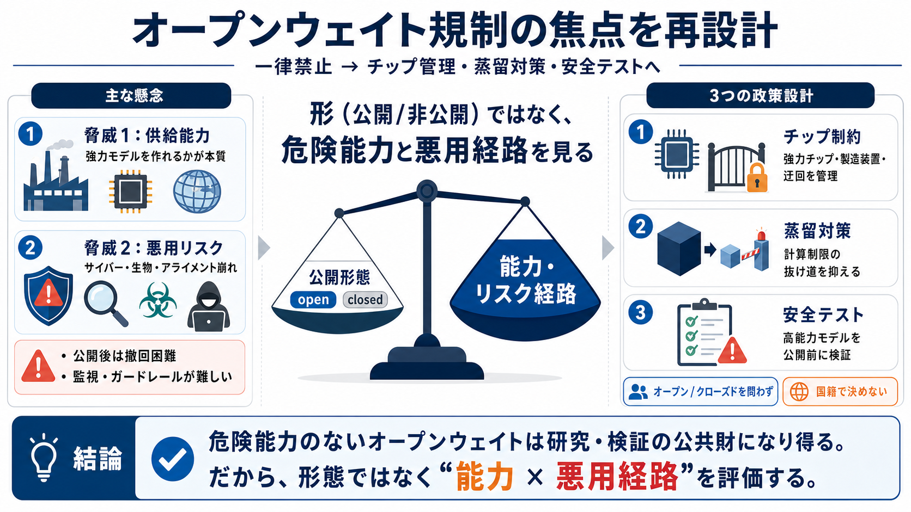

U.S. Government Claims China is Engaged in ‘Industrial-Scale Campaign’ to Distill AI Systems
U.S. Government Claims China is Engaged in ‘Industrial-Scale Campaign’ to Distill AI Systems. The U.S. government allege…

U.S. Government Claims China is Engaged in ‘Industrial-Scale Campaign’ to Distill AI Systems. The U.S. government allege…
We have identified industrial-scale campaigns by three AI laboratories—DeepSeek, Moonshot, and MiniMax—to illicitly extr…
Jul 6, 2026 — Anthropic's tracking code was designed in part to catch Chinese firms “distilling” its AI models, a techni…
# Anthropic joins OpenAI in flagging 'industrial-scale' distillation campaigns by Chinese AI firms. * Anthropic accused …
Feb 24, 2026 — Anthropic accuses DeepSeek, Moonshot AI, and MiniMax of large-scale distillation attacks on Claude, raisi…